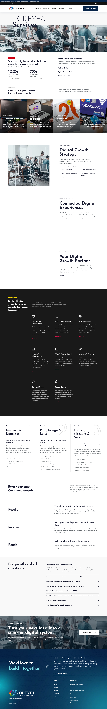
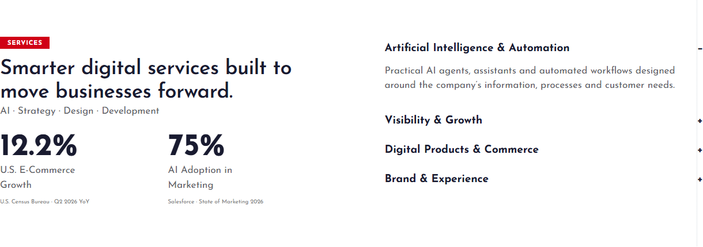
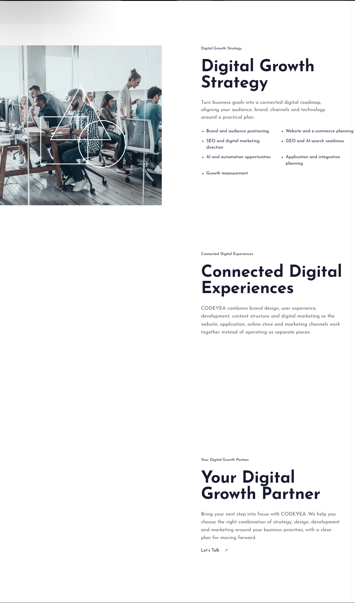
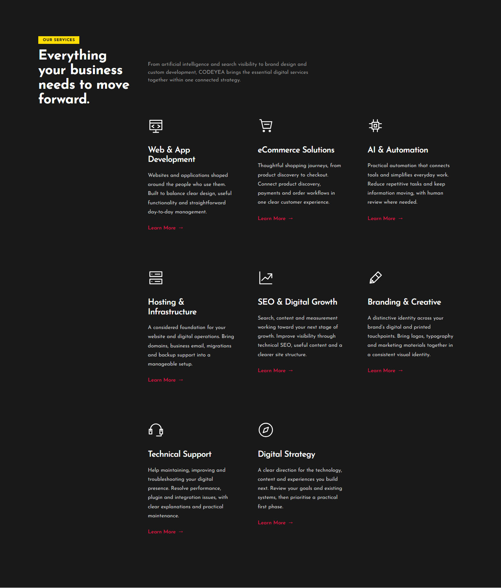
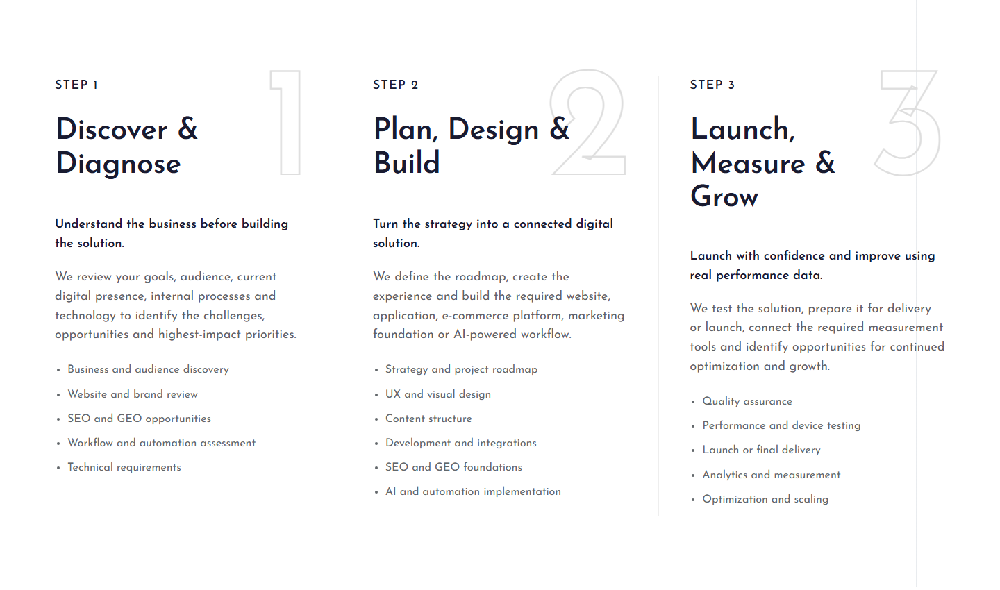
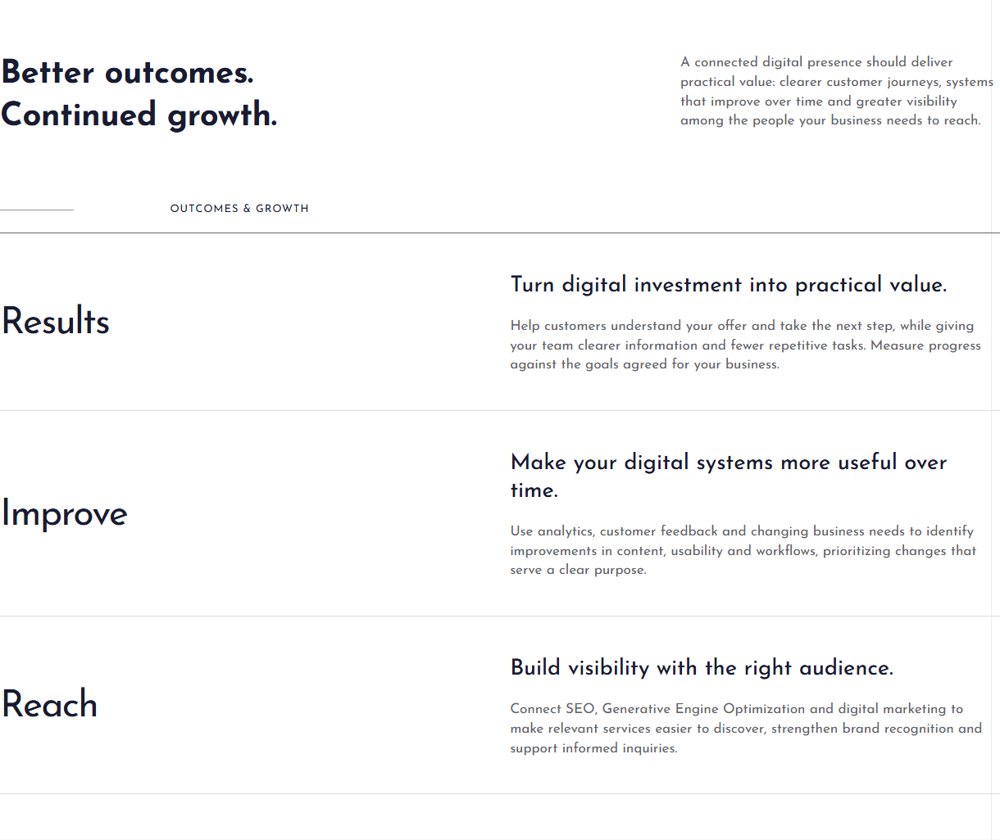
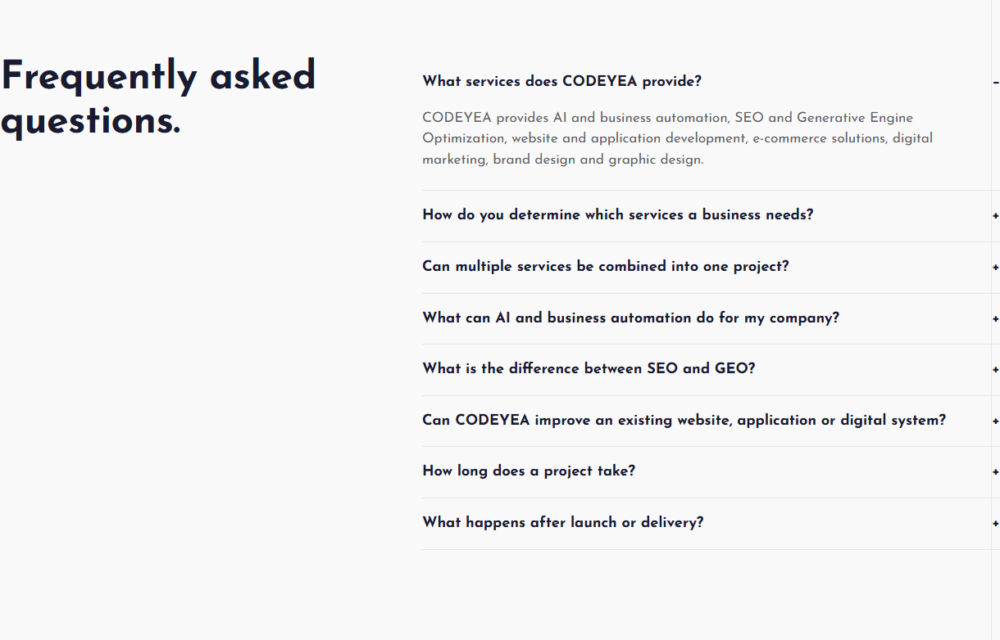
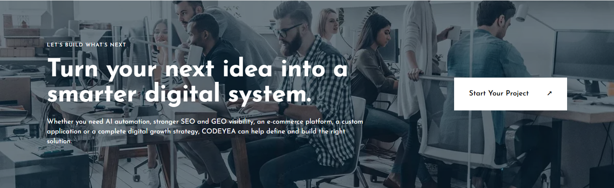
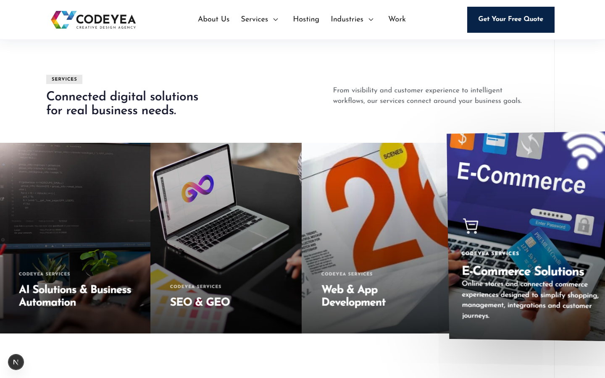


CODEYEA — الخدمات، مسودة خاصة 6تصحيح الكارتات وتسلسل العناوين الثلاثة
سكشن الخدمات بعد استرجاع العنوان والمقدمة والتوزيع
مقارنة التصميم المعتمد والتنفيذ
المعاينة المعتمدة المسودة المحفوظة — الحركة العادية
المسودة المحفوظة — الحركة العادية
السكشنات بالحجم الكامل
المقدمة






هوفر الكارت — الظل والأيقونة

المحتوى بدون JavaScript
فتح الصورة الأصلية 390px